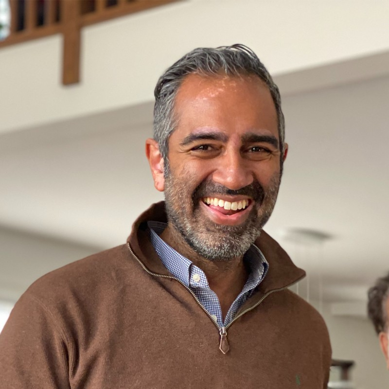
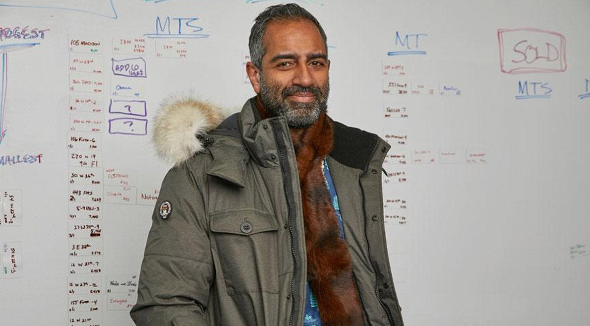

{kind=link}
Field notes — newsletter dispatch
Short reflections on building enduring companies and experiments. Say hi and join the list.
Founder · Investor · Teacher · Writer
Companies, ideas, notes, and experiments.
I build companies, back founders, teach new builders, and explore how technology and design shape the future of cities, work, and human potential.

Read the full biography and see where the journey began.
Read essays, research, and notes on building, policy, and design.
Discover the companies and funds I’ve founded, backed, or advised.
Courses and programs helping the next generation build what’s next.
Conversations with leaders exploring ideas, models, and impact.
Long-form thinking, guides, and archival work worth revisiting.
A rotating snapshot of the projects, writing, and teaching at the front of my mind.
Short reflections on building enduring companies and experiments. Say hi and join the list.
An inside look at building product teams that deliver beautifully crafted work on surprising timelines.
Columbia University undergraduates learn to launch ventures with purpose and rigor.
Turnkey commercial real estate, born from Popular Change’s venture studio and backed by Northzone.
I build durable companies, support founders through capital and counsel, teach venture-building at Columbia, and keep a long-running practice of writing and recording conversations about the future.
Dr. Amol Sarva is an American technology entrepreneur and investor.
He cofounded the venture capital firm LifeX Ventures in 2022 to focus on extending the longevity of people and planet through supporting software-driven science companies.
In 2021, he created Popular Change, a company builder that has been part of creating Aikito (turnkey commercial real estate, backed by Northzone), CornerUP (B2B marketplace for local commerce, backed by Tiger), Ratio21 (digital-first replacement for high school, backed by Bloomberg Beta), and Dinara (crypto commercial bank, cofounded by Silicon Valley Bank).
In March 2021, Newmark acquired Knotel, which he cofounded in January 2016. Knotel was one of the largest flexible office providers in the world with hundreds of locations in 10 countries and nearly $400mm of revenue run rate, valued as a unicorn by venture investors including Norwest and Wafra (Kuwait).
He helped develop a neurostimulation technology that boosts brain function through the company Halo Neuroscience. Halo was backed by Lux Capital, Jazz Venture Partners, and Andreessen Horowitz, before being acquired in 2021 by Flow Neuroscience.
Amol founded Knotable, a collaborative notes app for teams, with Edward Shenderovich of Kite Ventures and backing from Bloomberg Beta and 500 Startups.
He has been an advisor to: Plethora, a modern factory for getting metal parts faster; Fon, the world’s largest wifi network; Payfone (mobile payments); Work Market (platform for labor resources, acquired by ADP); and Ouya (open source game console, acquired by Razer).
Amol joined the adjunct faculty at Columbia University in 2016, teaching Venturing to Change the World and its advanced course Making History through Venturing to the College undergrads each year.
Amol has been a mentor to several Techstars accelerators, NYC Seed, Jazz Human Performance Venture Partners, and the Columbia University startup programs.
Through his family angel fund Sarva, Sarva, Sarva & Sarva he is involved in ~50 startups ranging from electric bikes to kids clothing to key robots and food delivery. He has been named one of the top angels in NYC by AlleyWatch and to Business Insider’s SAI100 list multiple times.
In 2007, Amol co-founded Peek as its CEO through worldwide product launches and raised over $25 million from top venture capital firms including RRE Ventures and Bharti SoftBank (which acquired it in 2012 to scale Hike to 500MM monthly users as of 2016).
Peek pioneered the mass market smartphone — a $30 Internet and email gadget that won awards and honors from a litany of global critics including Time (“Gadget of the Year”), The New York Times (“Simple and chic”), The Wall Street Journal, Wired (“#1 Gadget”), BusinessWeek (“Design Award Winner”), ID Magazine (“Annual Design Award”), IDSA, Engadget, Oprah’s O Magazine (“Favorite Things”), USA Today, NBC’s Today Show, ABC’s Good Morning America, ABC’s This Week, NPR, The Boston Globe, The San Francisco Chronicle, and many more. Major retailers from Target, Radio Shack, and Amazon to QVC, Wired’s Pop Up Shop and Skymall all featured the product. Peek’s cloud and software technology was built into hardware designs from much larger global players like ZTE and Micromax, and its leading customers use the Peek platform to deploy smartphone apps onto the widest range of smart and featurephones.
In 2007, Amol testified in front of the Federal Communications Commission and the U.S. Senate advocating open access in wireless spectrum policy. He gave oral testimony before Senator Ted Stevens (“The Internet is a series of tubes”). He was profiled on C-SPAN and has written on behalf of the Wireless Founders Coalition for Innovation, and served as adviser to greenfield network startup Frontline Wireless. The FCC eventually backed rules requiring open access that govern the C-Block today. In 2009, Amol was part of protesting the AT&T/T-Mobile merger, eventually blocked by the FTC.
He is an original member of the Founders’ Roundtable in New York, a group of 500+ venture-backed startup founders that has met monthly since 2006. He has been named multiple times to the Silicon Alley 100 list of top New York entrepreneurs and is a mentor for the NYC Seed venture capital fund’s SeedStart program.
Amol was cofounder of Blue Mobile, Digicel Group and Denis O’Brien’s effort to create a simple prepaid wireless offering in the US, where he led partnerships with Verizon and Wal-Mart. He was an engagement manager at McKinsey & Company in New York.
As the second employee of Virgin Mobile USA in San Francisco in January 2000, Amol was part of the founding team. He helped build the model, design the data features, and raise the money from Richard Branson’s Virgin Management and Sprint PCS. Virgin Mobile later went public on NASDAQ, was acquired by Sprint, and then in turn by Softbank.
Amol’s Ph.D. is from Stanford University (pdf download, dissertation: The Concept of Modularity in Cognitive Science, advisor: Mark Crimmins) and B.A. is from Columbia University (Economics, advisor: Sidney Morgenbesser; Philosophy, advisor: Akeel Bilgrami). He is a graduate of Stuyvesant High School in New York, where he was a city, state and national champion in debate and team captain.
In Long Island City, Queens, he is the builder of an architecturally distinctive 9-story, 13-loft residential building that the New York Daily News architecture critic in 2010 called “the most important new building in the borough” — East of East.
He was the creator of the popular neighborhood blog LICNYC.com since 2002, and a cool rooftop sign that people liked.
He has a podcast interviewing CEOs of some of the world’s largest companies and academics pioneering some of the world’s best-known ideas called In the Know.
He has a photograph in the Museum of Modern Art’s permanent collection, and collaborated on a work with the painter Tom Sanford in the collection of the museum of art at Syracuse University.
He has contributed writings to Fortune, Huffington Post, Alley Insider, Salon, Strategy & Business, and BusinessWeek.
His website is Amol.Sarva.Co.
Essays and commentary in Fortune, Huffington Post, Alley Insider, Salon, Strategy & Business, BusinessWeek, and more.
Course site — Columbia University undergraduates design ventures that address real-world problems.
Columbia’s invite-only venture studio where small founder teams pressure-test ideas with alumni operators and launch pilots before graduation.
Active advisory roles across Techstars, NYC Seed, Jazz Human Performance Venture Partners, and Columbia University startup programs.
Listen to the series — interviews with CEOs and academics exploring the ideas shaping business, cities, and science.
Appearances before the FCC and U.S. Senate advocating for open wireless spectrum, with C-SPAN capturing the 700 MHz auction testimony.
Watch the FCC spectrum testimony Wireless Spectrum Auction and Small Business hearing, streamed by C-SPAN on YouTube.Founder of the Founders’ Roundtable, convening hundreds of venture-backed founders monthly since 2006.
Stanford dissertation exploring modularity in cognitive science, supervised by Mark Crimmins.
FT’s “grave dancer” profile on threading resilient growth in flexible offices.
Live encyclopedic dossier on ventures, policy work, and academic projects.
Deep-dive interview on contrarian strategy, Knotel’s buildout, and cultural roots.

On building markets through experimentation, learning loops, and customer empathy.